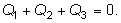
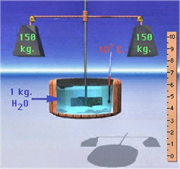
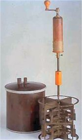

Elemente de termodinamică. |
Calorimetrie |
Când torni ceai fierbinte într−un termos, mai multe corpuri transferă căldură între ele.
a. Câţi participanţi interacţionează termic?
b. Care dintre aceştia cedează căldură şi care primeşte?
c. Scrie ecuaţia calorimetrică pentru această situaţie.
d. Care te aştepţi să fie temperatura finală a sistemului?
Răspuns:
a. Trei: ceaiul, vasul termosului şi mediul exterior termosului.
b. Având temperatura iniţială mai ridicată, ceaiul cedează căldură, în timp ce vasul termosului şi mediul
exterior acestuia primesc căldură.
c. 
d. Temperatura mediului exterior termosului.
Într−un calorimetru bine izolat termic sunt introduse două corpuri pentru a studia transferul de căldură dintre acestea. Calorimetrul este prevăzut cu termometru şi agitator. Câti participanţi interacţionează termic?
Răspuns:
Cinci (dacă neglijezi schimbul de căldură cu mediul exterior calorimetrului): cele două corpuri care sunt studiate,
vasul calorimetrului, termometrul şi agitatorul.
Încălzeşte apă într−un ibric (sau alt vas metalic din bucătărie). Ia ibricul de pe foc şi măsoară cu un termometru, din minut în minut, temperatura apei.
Transcrie datele într−un tabel şi reprezintă grafic cum scade în timp temperatura apei.
Când scade mai repede temperatura apei:când aceasta este fierbinte sau când este doar cu puţin mai caldă decât aerul din încăpere?
Răspuns:
Viteza de răcire (cu câte grade scade temperatura în fiecare minut) este cu atât mai mare cu cât este mai mare
diferenţa de temperatură dintre apa fierbinte şi aerul din încăpere.
Cum este oare mai bine să procedezi când trebuie să încălzeşti apă până la fierbere: să pui flacăra maşinii de gătit la maxim sau la minim?
În care caz reduci cel mai mult consumul de gaze?
Răspuns:
Flacăra trebuie dată la maxim. Aşa se reduce cel mai mult consumul de gaze (şi se reduce, totodată, timpul de aşteptare).
Imaginează−ţi că ai pregătit apa pentru baie şi nu eşti mulţumit de temperatura acesteia − ai vrea un grad în plus. În cadă sunt 200 L de apă cu temperatura 39°C.
Câtă apă cu temperatura 55°C trebuie să adaugi apei din cadă, astfel ca temperatura finală a apei să fie 40°C?
Când interacţionează termic două corpuri având iniţial temperaturi diferite, temperatura unuia scade în timp ce temperatura celuilalt creşte.
Poţi spune oare că se transferă temperatură de la unul la celălalt, cu alte cuvinte, cu cât scade temperatura unuia creşte temperatura celuilalt?
Confruntă răspunsul tău cu următoarea situaţie: un strop de apă fierbinte cade într−o cadă plină cu apă rece. Oare temperatura stropului de apă iniţial fierbinte scade tot atât de mult cât creşte temperatura apei iniţial rece din cadă?
Cantitatea de căldură necesară modificării cu un kelvin a temperaturii unei cantităţi de apă cu masa 1−g este numită calorie (simbol cal).
Multă vreme nu a fost clară legătura dintre căldură şi celelalte forme de energie. După mai multe încercări, în 1850, englezul James Prescott Joule a reuşit să demonstreze echivalenţa formelor de energie: cantităţi egale de energie mecanică, electrică sau chimică provoacă aceeaşi modificare a temperaturii unei cantităţi de substanţă.
Într−unul dintre experimente, Joule a constatat că, pentru a produce modificarea cu un kelvin a temperaturii unei cantităţi de apă cu masa 1 kg, este necesară energia eliberată prin căderea cu un metru a unui corp cu masa 427,6 kg.
În acest experiment, energia era furnizată de căderea a două corpuri. Acestea, prin cădere, desfăşurau firele de pe un ax cu palete, punându−l în rotaţie (figura 1).
|  |  |
Paletele agitau apa, transferând moleculelor acesteia energie cinetică. Un termometru înregistra modificarea temperaturii apei.
a. Cât este energia mecanică furnizată apei prin căderea cu un metru a unor corpuri cu masa totală 427,6 kg?
b. Cât este echivalentul energetic al caloriei?
Răspuns parţial: b) 4,19 J.
Suntem sfătuiţi să practicăm exerciţii fizice pentru a utiliza energia obţinută din alimente, altfel, excesul conduce la creşterea nedorită a masei corporale.
a. Caută pe ambalajul ciocolatei favorite aportul de energie pe care ţi−l oferă dacă o mănânci şi calculează câte etaje ar trebui să urci pe scări pentru a utiliza această cantitate de energie.
b. Atunci când bei apă rece, aceasta se încălzeşte aproape imediat la temperatura internă corporală (aproximativ 37°C), preluând energie de la corpul tău. Câtă apă rece cu temperatura 10°C ar trebui să bei pentru a utiliza energia oferită de ciocolata favorită? Este oare recomandabilă o cură de slăbire cu apă rece?